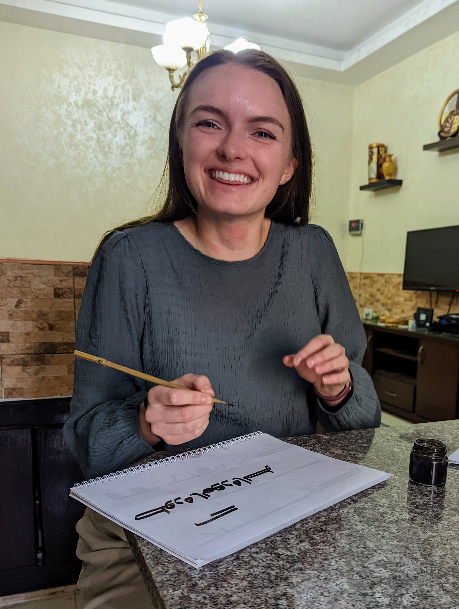

My Resume and Calligraphy Experience
Education Employment Skills Calligraphy
Thank you for visiting my page! This is primarily a travel blog for my adventures this semester, created as part of an assignment of IS 201 at BYU. For background on this page and a little about me, visit the about page above. I hope you are having the most fantastic day today.
Education
- Brigham Young University
- Aug. 2020 - present
- GPA: 3.93
- Major: Graphic Design, Minors: Business, Entrepreneurship
- Brigham Young University-Idaho
- Sept. 2017 - July 2018
- GPA: 3.93
- Associate Degree in General Studies
- Wasatch High School
- Graduated 2017 with honors
- GPA: 4.0
- Academic All-State in three sports
Employment
- The UPS Store
- Heber City Location
- June 2017 - Aug 2018
- May 2022 - Sep 2022
- Provo University Avenue Location
- May 2020 - May 2021
- Heber City Location
- BYU Marriott School of Business
- Graphic Designer
- Aug. 2021 - present
- Freelance design
- 2020 - present
- For assorted businesses and individuals in the Heber City area.
Skills
- Adobe Creative Suite
- Microsoft Office
- Design thinking and problem solving
- Organization
- Fast learner
- Calligraphy (Arabic & English)
- Smiling
- Basic HTML and CSS
- For demonstration purposes, click here to see tableau integration.
Calligraphy
This fall, I had the opportunity to take courses in Amman, Jordan that taught several different types of traditional and modern Arabic Calligraphy, including:
- Diwani
- To see a video of my teacher demonstrating the basics of Diwani, click here.
- Square Kufic
- Hijazi Script

Back to top of page